ruby · tiling · pty
Stop resizing panes. Pick a layout instead.
A keyboard-driven terminal multiplexer written in pure Ruby. GNU Screen's keybindings, xmonad's automatic tiling, and a Quake-style drop-down drawer — in about nine thousand lines of stdlib, with no runtime gems at all.
t w | - g f e S m F ten layouts
A layout in muxr is a pure function of (name, pane count, screen area). There is no saved per-pane geometry to drift out of sync, so opening, closing, or promoting a pane just recomputes the tiling on the next frame — and a detach onto a different-sized terminal simply re-tiles. The playground below runs muxr's real layout code.
Click a key, or just type it — this page listens for the same bindings muxr does. hjkl moves focus spatially, exactly as muxr's neighbour lookup does.
< > size the master area and ,
. change how many panes share it, in tall,
wide and centered. z zooms the focused
pane and puts the layout back on the second press.
Screen resizes the simulated terminal. F —
auto, the layout new sessions start in — is the one that
reads it: spiral from 180×30 up, stack below.
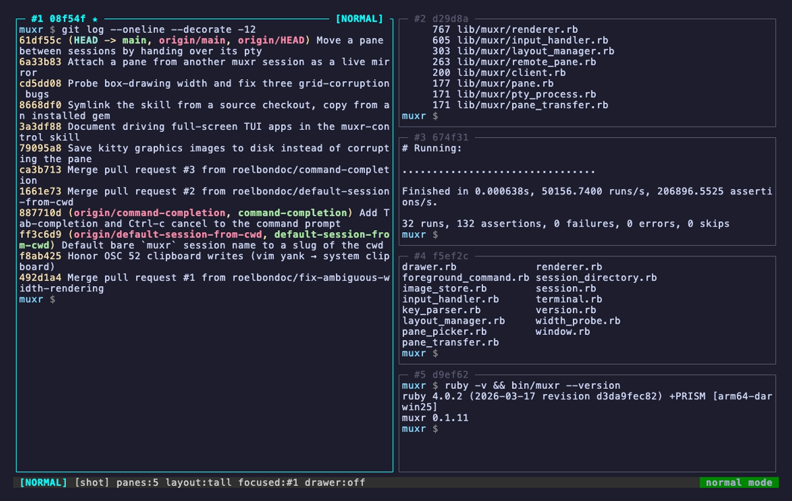
the screen
Each pane's title carries a positional slot (#1) and a stable six-hex
id (a3f9b2) minted once and kept for life — through layout changes,
detach and reattach, a move to another session, and a cold restart from disk.
Give a pane a name with :rename api and the title says
#1 api instead. ★ marks the layout master;
· npm test appears when something other than the shell holds
the foreground; #2!, #2~ and #2• mean the
pane wants you.
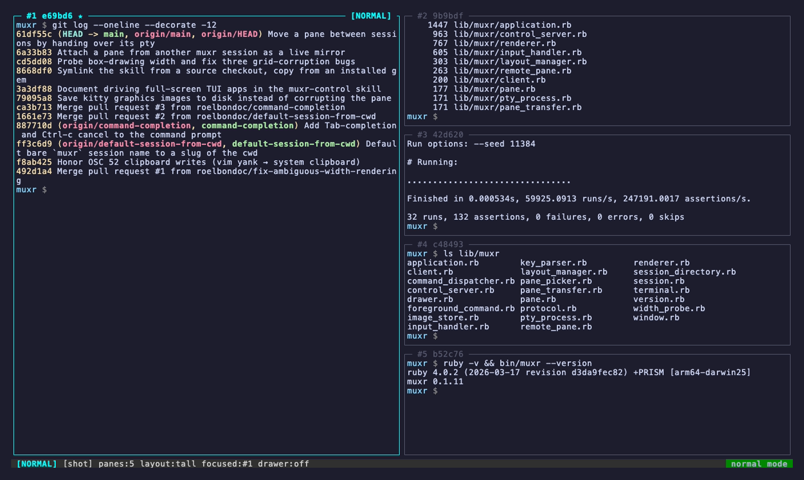
two modes
Normal mode is where muxr starts: single keys drive the
multiplexer, no chord required. Press i and you're in
passthrough — every keystroke reaches the shell, and muxr's own
commands move behind the historical Ctrl-a prefix. If your fingers
already know Screen, nothing has been taken away.
| hjkl | focus pane left / down / up / right, spatially |
| HJKL | drag the focused pane in that direction |
| i | drop into passthrough mode |
| c x | new pane / close pane (asks y/n) |
| twgm | tall / wide / grid / monocle |
| |-feS | columns / rows / spiral / centered / stack |
| F | auto — spiral on a roomy screen, stack below it (the default) |
| Tab Enter | cycle layout / promote to master |
| < > , . | master size / master count |
| z | zoom the focused pane / put the layout back |
| a 1…9 | last pane / jump by number |
| s ] | scrollback / paste the yank buffer |
| ~ C P | drawer / Claude drawer / private flag |
| A r | borrow a pane / force a redraw |
| : ? | command prompt / help |
| d q | detach / kill session (asks y/n) |
| C-a Esc | back to normal mode |
| C-a c x | new / close pane |
| C-a n p a | next / previous / last pane |
| C-a 1…9 | jump by number |
| C-a Tab | cycle layout |
| C-a Enter | promote to master |
| C-a < > , . z | master size / count / zoom |
| C-a [ ] | scrollback / paste |
| C-a ~ C P | drawer / Claude drawer / private |
| C-a A r | borrow a pane / redraw |
| C-a d q | detach / kill session |
| C-a : ? | command prompt / help |
| C-a C-a | send a literal Ctrl-a through |
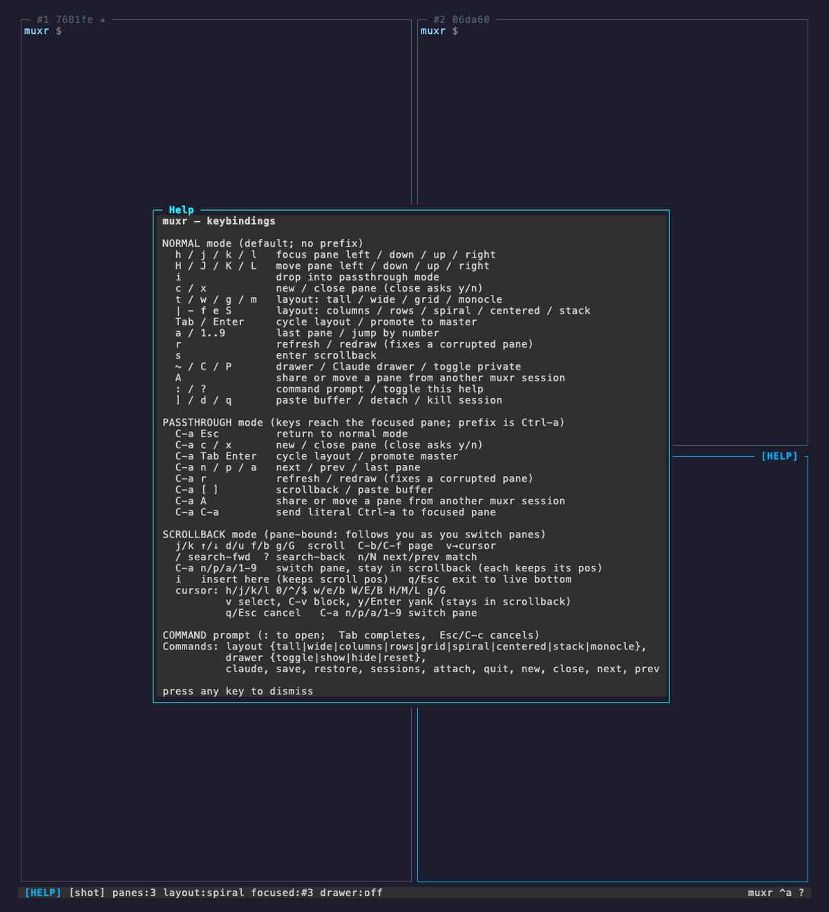
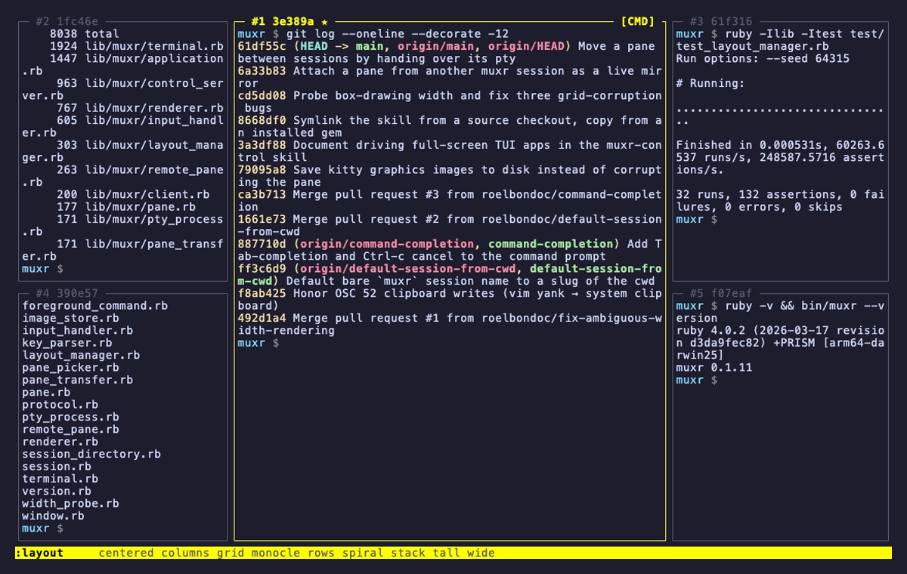
: opens a command line across the status bar with
Tab completion for commands and their arguments. Any unambiguous
prefix works — :layout t is enough; ambiguous ones flash the
candidates rather than guessing.
It is also where the verbs without a key live: :rename,
:silence 30, :sync, :ratio 60,
:masters 2, :capture and :reload —
any of which you can put on a key of your own in the
config file.
scrollback & copy-mode
Every pane keeps a 50 000-row scrollback ring, and a row costs what it printed
rather than the width of the pane. s enters copy-mode
with vi navigation; / searches with smart-case across the ring
and the live grid, centring the match and highlighting every hit.
v gives you a movable cursor with real vim motions —
w e b, 0 ^ $, H M L — plus
Ctrl-v for rectangular blocks. y yanks to muxr's
buffer and the system clipboard. Scrollback is
pane-bound, not modal: switch panes while you're in it and
each one remembers where you were reading.
When a screenful at a time isn't enough, :capture writes the
whole history out as plain text — no escape codes, wide glyphs intact — to
~/.muxr/captures/ or wherever you name.
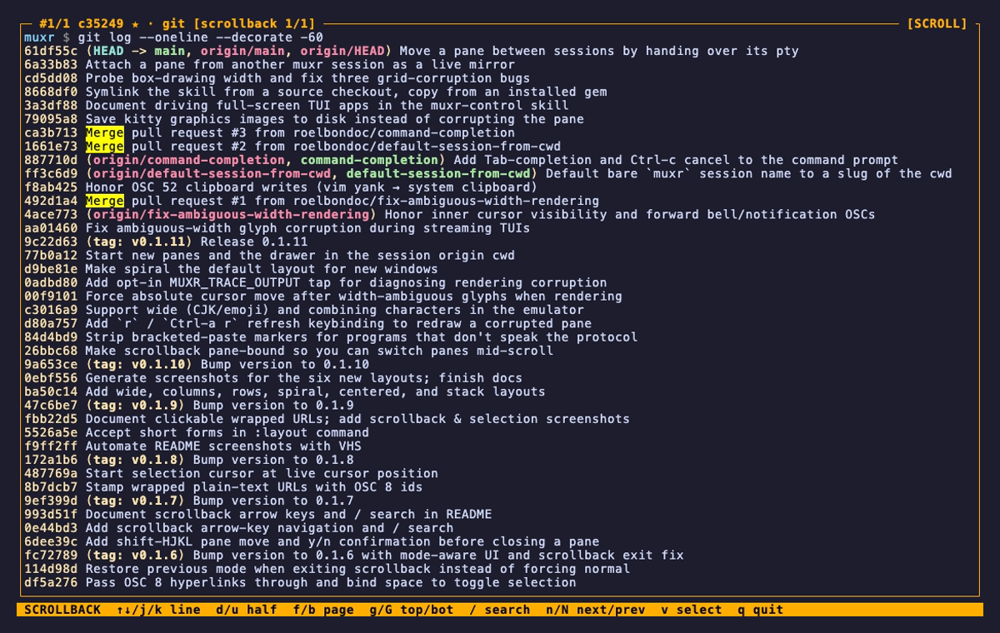
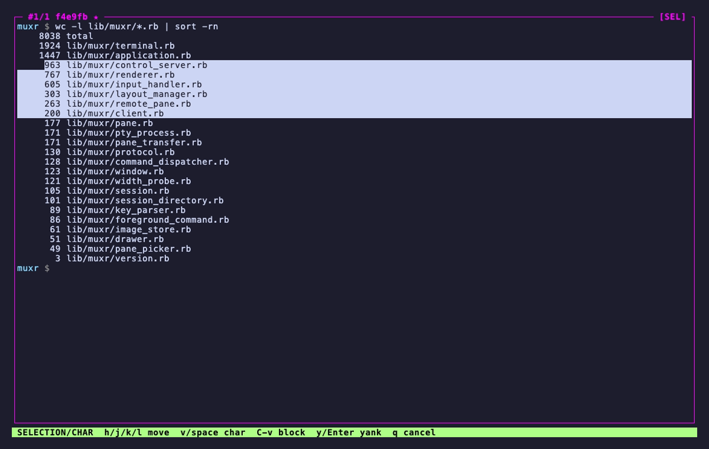
! ~ • attention
Five agents, a build and a log tail, and a bell rings. muxr has always passed bells and desktop notifications through from every pane. Now it also remembers which pane it was, marks it in its title and in the status bar, and forgets as soon as you look at it.
┌─ #1 api ★ · claude ───────┬─ #2! build ──────────┐ │ │ rang the bell │ │ ├─ #3~ deploy ─────────┤ │ │ quiet for 30s │ │ ├─ #4• logs ───────────┤ │ │ new output │ └───────────────────────────┴──────────────────────┘ [NORMAL] [work] panes:4 layout:tall alerts:2!,3~,4•
! the pane rang the bell or sent an OSC 9 / 777 notification.• the pane printed while you were looking elsewhere. Prompt redraws caused by a re-tile are ignored.~ the pane went quiet for longer than :silence 30 allows — for the job that tells you it is done by stopping.pane #3 silent for 30s, rings your terminal's
bell, and marks it ~. It fires once per quiet spell, takes
30s or 2m, and is saved with the session.[SYNC] chip and red borders stay up for as long as it is on, the
drawer is never included, and it is never saved with the session.~ the drawer
~ drops a persistent overlay shell over the whole layout — the
terminal equivalent of a Quake console. It's the right home for the command
you keep needing but don't want to spend a pane on.
Hiding it never kills its PTY. The shell keeps running, so the
next toggle brings back exactly what was on screen, scrollback and all. Only
:drawer reset respawns it.
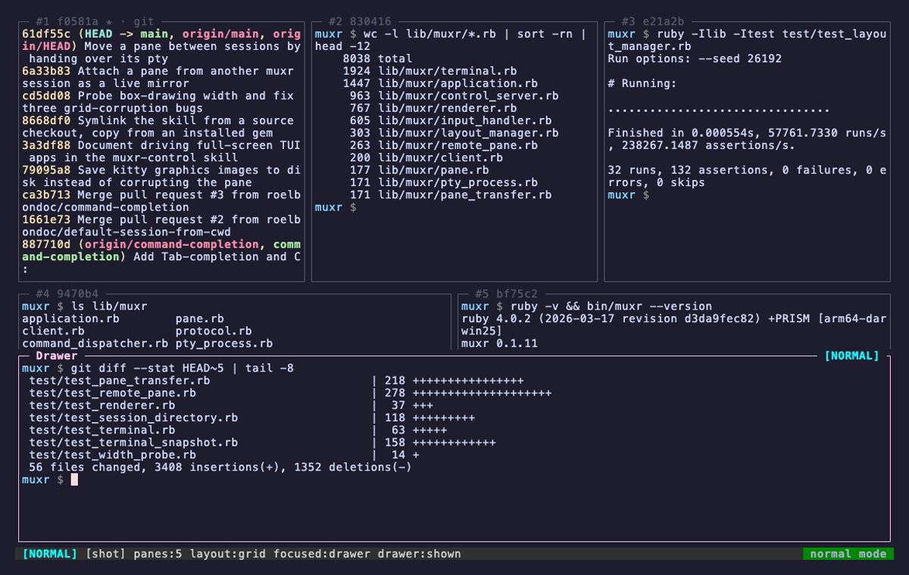
A panes across sessions
A lists every pane the other muxr servers on this machine are
offering, grouped by session. Enter shares it;
m moves it here for good.
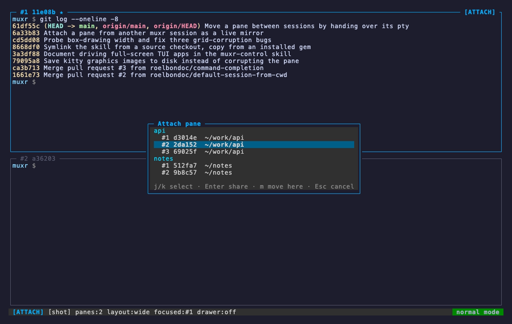
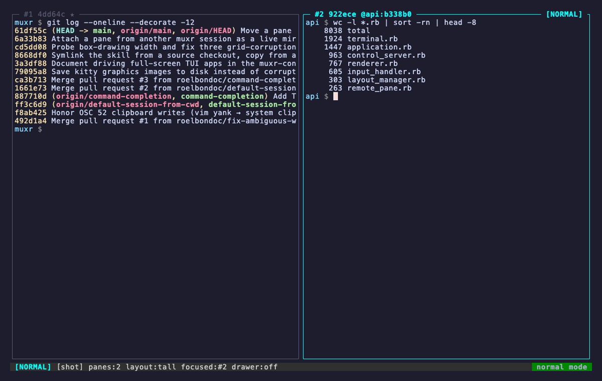
A shared pane keeps running where it lives; both sessions show the same live shell and either can type into it. What crosses between servers is the raw PTY byte stream, not a screen scrape — so colours, the alternate screen and full-screen TUIs all mirror faithfully.
:save.
m is a real handover, not a re-spawn. The master pty file
descriptor itself crosses the socket over SCM_RIGHTS, so the
same shell process keeps running — environment, background jobs, scroll
position, everything on screen. Afterwards it's an ordinary local pane that
simply isn't in the other session any more.
# wire order is load-bearing preamble → a refusal has no fd to send fd → recvmsg(SCM_RIGHTS), byte at a time state → grid, scrollback, modes, pane id two-phase: nothing is torn down until the receiver confirms a working pane. A failure anywhere leaves the pane where it was.
built for agents
Alongside the TTY socket, every muxr server exposes a JSON-RPC control listener at
~/.muxr/sockets/<name>.ctrl.sock. It takes many concurrent clients
and is independent of TTY attach, so a coding agent and a human can drive the same
session at the same time — neither locks the other out.
# the surface session.get panes.list pane.read pane.send_input pane.run pane.focus pane.new pane.kill pane.promote pane.redraw layout.set pane.subscribe / unsubscribe pane.mirror / mirror_resize / unmirror pane.move / move_commit / move_abort drawer.toggle / show / hide / reset drawer.read / send_input session.save # and the bridge $ muxr --install-skill
muxr --install-skill installs the Claude Code skill and prints the
claude mcp add line for muxr-mcp, a standalone
MCP-over-stdio bridge. C opens a drawer running
claude with the session already wired into its environment: a
Quake-style agent overlay that knows which panes it is looking at.
idle_ms (default 500). That kills the
send-then-poll race naive automation always loses.<esc>, <c-c>,
<cr> and arrows interleaved with literal text, instead of
remembering that Escape is "\e".P marks a pane [P]: programmatic callers can't read it,
type into it, kill it, or see its working directory, and it's never offered to
another session. The control surface has no method to unset the flag —
only a human at the keyboard can.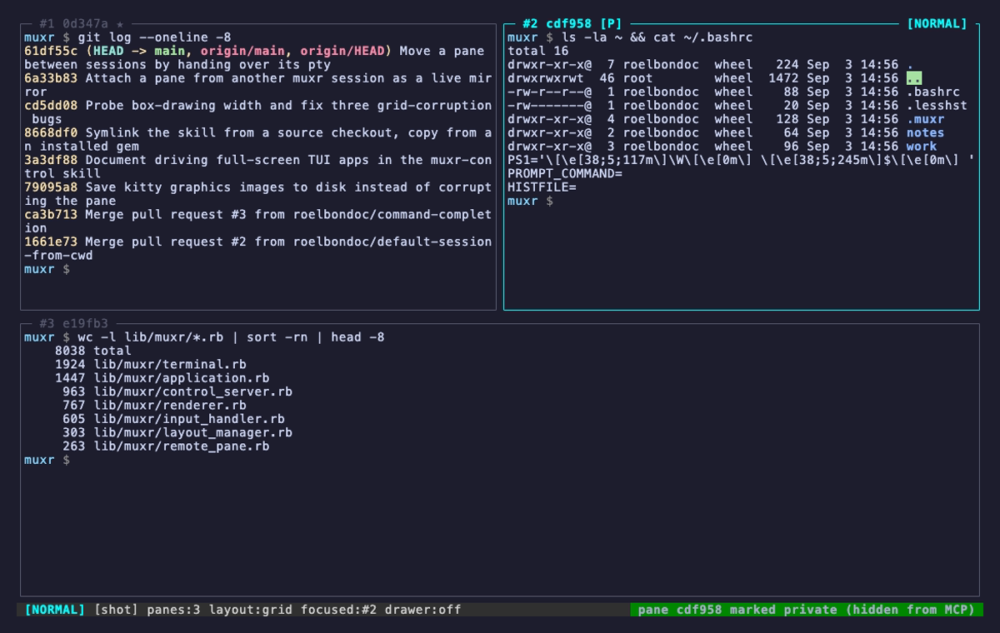
~/.muxr/config.json
One optional JSON file — parsed, never evaluated — sets the default layout, the
scrollback depth, the master shape and the point where auto flips to
spiral. It moves the prefix to Ctrl-b if tmux is in
your hands, and puts any action or any : command on any key.
:reload picks up an edit without restarting the session.
{
"layout": "tall",
"scrollback": 20000,
"master_ratio": 0.6,
"auto_spiral_min": { "cols": 200, "rows": 40 },
"prefix": "C-b",
"keys": {
"normal": { "Z": "toggle_zoom", "Y": ":sync", "q": null },
"prefix": { "Space": "cycle_layout", "S": ":capture" }
}
}
C-x, Tab, Enter, Space or Esc.set_layout:grid, focus_direction:left), to a : command, or to null to unbind it.MUXR_SCROLLBACK still wins over scrollback.under the hood
Ctrl-a d closes the client and leaves every PTY alive in the server.
Reattach and you're back in the same shells with their full history, because the
session never left the server process. Killing it takes a y/n — there
is no kill-without-confirm binding, by design.
Client (foreground, owns the TTY) Server (daemon, owns the PTYs) ├─ STDIN raw mode + alternate screen Application (single-threaded IO.select) ├─ SIGWINCH → RESIZE frame ├─ Session ─ Window ─ Pane[] ─ Terminal + PTYProcess ├─ WidthProbe (DSR-CPR glyph measurement) │ └─ Drawer ─ Pane └─ Protocol ├─ Renderer diff-emits ANSI, cell by cell ◄── OUTPUT bytes ──── Renderer ◄────────────┤ InputHandler normal / passthrough machine ──── INPUT bytes ───► InputHandler ├─ LayoutManager pure (layout, count, area) ──── HELLO/RESIZE ──► apply_size ├─ UNIXServer <name>.sock — one TTY client ◄── BYE ───────────── disconnect_client └─ UNIXServer <name>.ctrl.sock — many
pbcopy for real.
URLs that wrap across rows are re-stamped with matching OSC 8 ids so they stay
one clickable link.~/.muxr/images and announced as one clickable file://
line. Multi-chunk transfers are reassembled and raw RGBA is re-encoded into a
real PNG.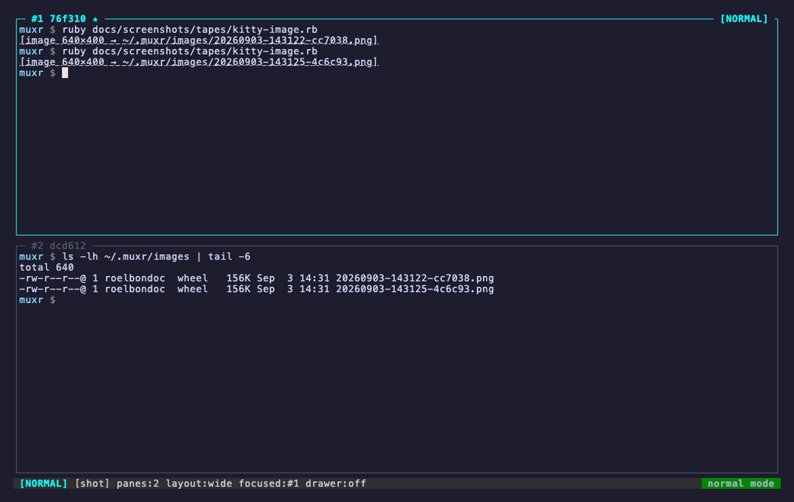
Ruby ≥ 3.4 and nothing else. The first muxr in a directory starts a
server named after it; every one after that attaches.